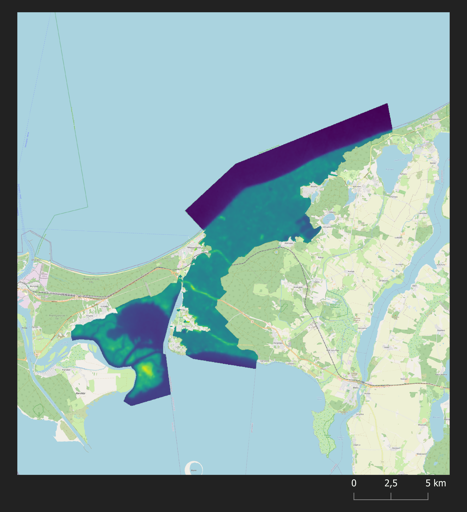
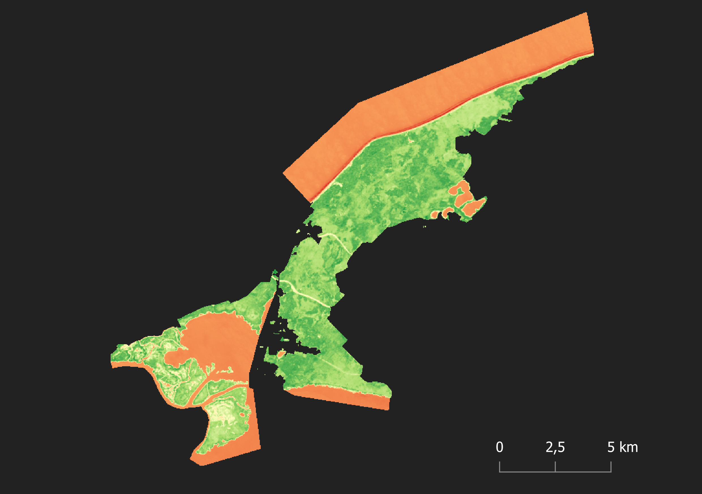
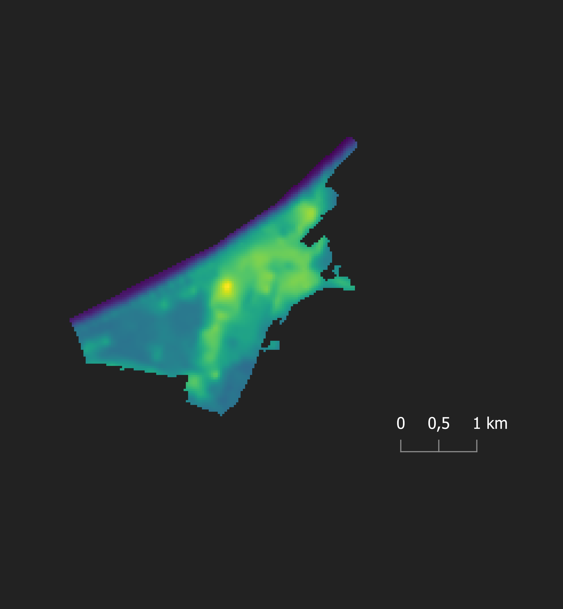
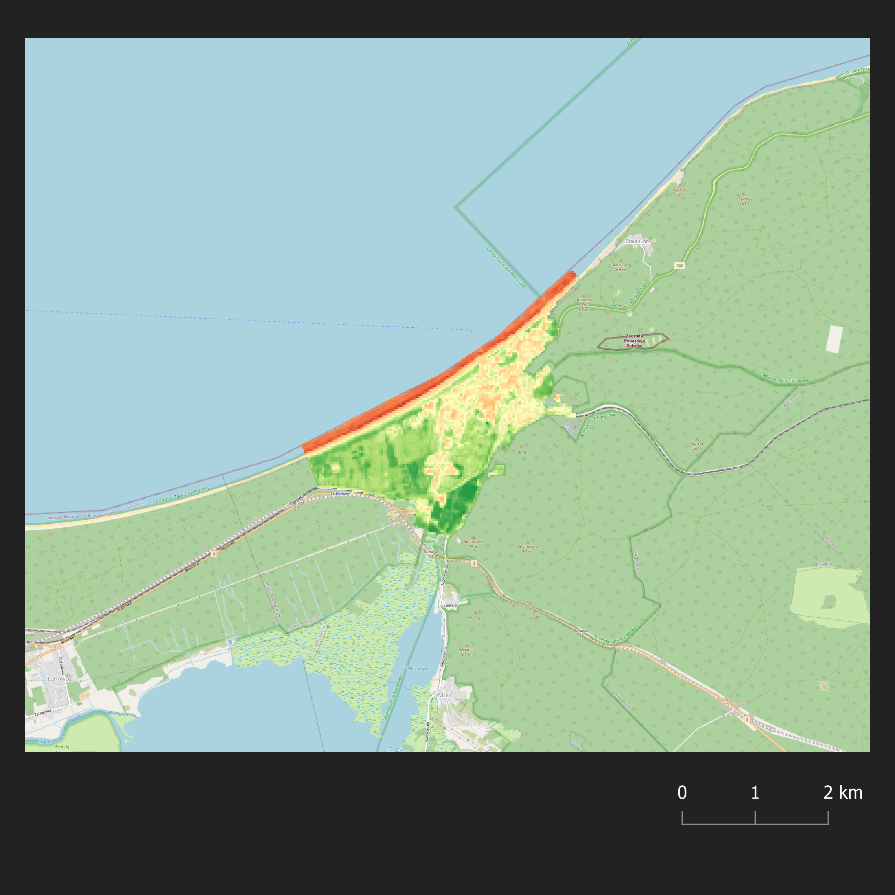

Poniższa publikacja jest efektem końcowym projektu naukowego realizowanego w ramach wyjazdu na Obóz Naukowy w Białej Górze przez Sekcję Geoinformacji Studenckiego Koła Naukowego na Uniwersytecie im. Adama Mickiewicza w Poznaniu. Celem projektu była statystyczna ocena korelacji wskaźnika NDVI oraz temperatury gruntu z pokryciem terenu dla Wolińskiego Parku Narodowego i miasta Międzyzdroje.
Woliński Park Narodowy znajduje się w województwie zachodniopomorskim, na największej polskiej wyspie - Wolin. Jest jednym z najchętniej odwiedzanych atrakcji turystycznych w kraju - w roku 2015 pod tym względem plasował się na 8. miejscu, z liczbą odwiedzających przekraczającą 1,5 mln osób. Park charakteryzuje się wielką różnorodnością pokrycia terenu, w tym głównie lasów, które zajmują niemal 45 procent powierzchnii z ok. 110 km². Granicząc z Międzyzdrojami, które zajmują 4,5 km², daje to dość kontrastowy pod względem potencjalnych różnic temperatury wielki pas zieleni.
Poniższy wykres przedstawia histogram wartosci wskaznika NDVI dla WPN
Poniższy wykres przedstawia korelację wskaźnika NDVI z temperaturą gruntu dla Miasta Międzydzroje z jakimiś kolorami czym więcej kolumn tym rośliny lepsze
Poniższy wykres przedstawia histogram Temperatury dla WPN
Poniższy wykres przedstawia histogram Temperatury dla Miedzyzdrojow
   